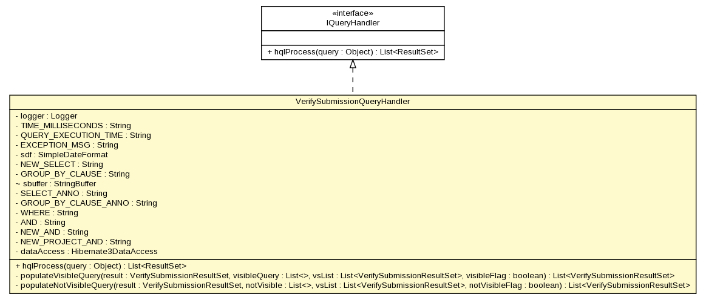

gov.nih.nci.ncia.queryhandler
Class VerifySubmissionQueryHandler

java.lang.Object
 gov.nih.nci.ncia.queryhandler.VerifySubmissionQueryHandler
gov.nih.nci.ncia.queryhandler.VerifySubmissionQueryHandler
- All Implemented Interfaces:
- IQueryHandler
public class VerifySubmissionQueryHandler
- extends java.lang.Object
- implements IQueryHandler
Build and execute HQL query
| Methods inherited from class java.lang.Object |
clone, equals, finalize, getClass, hashCode, notify, notifyAll, toString, wait, wait, wait |
logger
private static org.apache.log4j.Logger logger
TIME_MILLISECONDS
private static java.lang.String TIME_MILLISECONDS
QUERY_EXECUTION_TIME
private static java.lang.String QUERY_EXECUTION_TIME
EXCEPTION_MSG
private static java.lang.String EXCEPTION_MSG
sdf
private java.text.SimpleDateFormat sdf
NEW_SELECT
private java.lang.String NEW_SELECT
GROUP_BY_CLAUSE
private java.lang.String GROUP_BY_CLAUSE
sbuffer
java.lang.StringBuffer sbuffer
SELECT_ANNO
private java.lang.String SELECT_ANNO
GROUP_BY_CLAUSE_ANNO
private java.lang.String GROUP_BY_CLAUSE_ANNO
WHERE
private java.lang.String WHERE
AND
private java.lang.String AND
NEW_AND
private java.lang.String NEW_AND
NEW_PROJECT_AND
private java.lang.String NEW_PROJECT_AND
dataAccess
private Hibernate3DataAccess dataAccess
VerifySubmissionQueryHandler
public VerifySubmissionQueryHandler()
hqlProcess
public java.util.List<ResultSet> hqlProcess(java.lang.Object query)
throws java.lang.Exception
- method comment
- Specified by:
hqlProcess in interface IQueryHandler
- Throws:
java.lang.Exception- See Also:
IQueryHandler.hqlProcess(java.lang.Object)
populateVisibleQuery
private java.util.List<VerifySubmissionResultSet> populateVisibleQuery(VerifySubmissionResultSet result,
java.util.List visibleQuery,
java.util.List<VerifySubmissionResultSet> vsList,
boolean visibleFlag)
populateNotVisibleQuery
private java.util.List<VerifySubmissionResultSet> populateNotVisibleQuery(VerifySubmissionResultSet result,
java.util.List notVisible,
java.util.List<VerifySubmissionResultSet> vsList,
boolean notVisibleFlag)